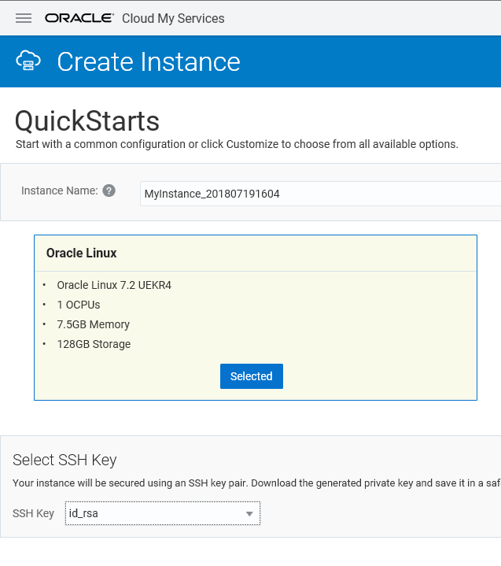
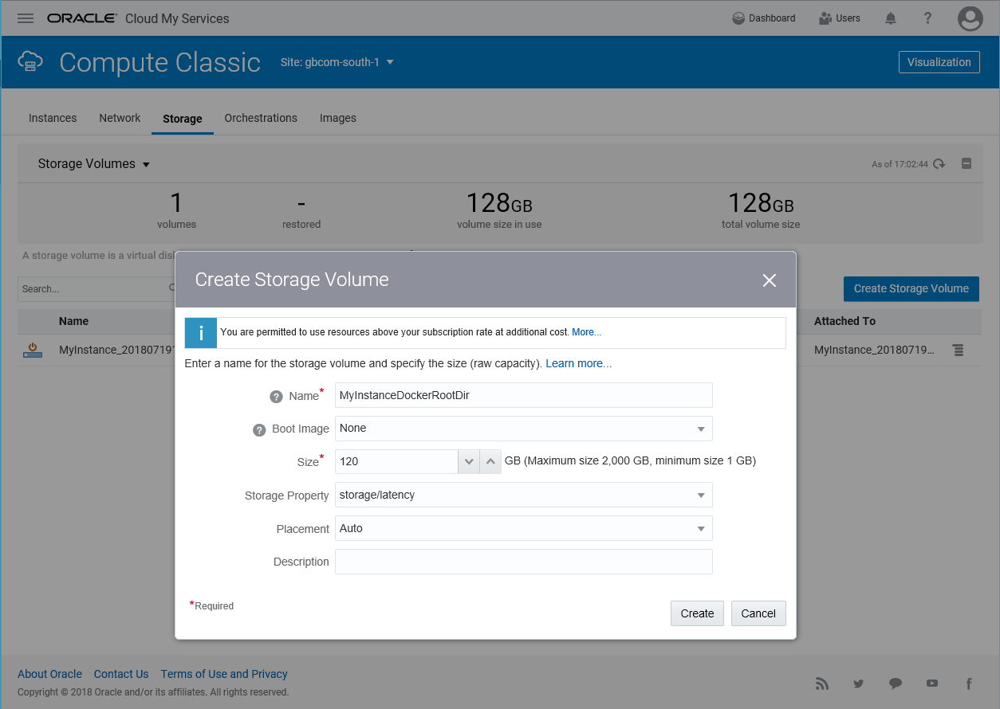
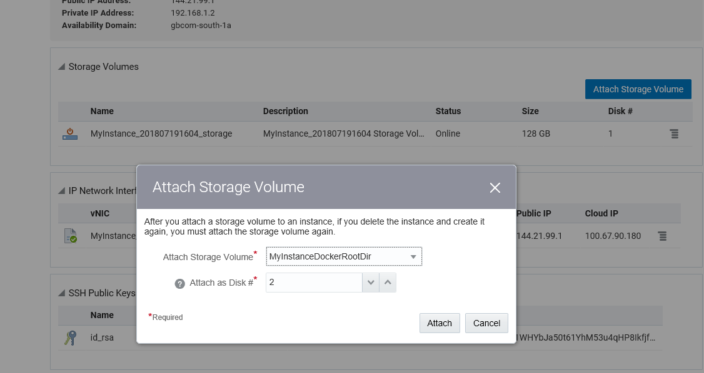

This was first published on https://www.dbi-services.com/blog/installing-zfs-on-oel7-uek4-for-docker-storage/ (2018-07-20)
Republishing here for new followers. The content is related to the versions available at the publication date.
.
The Oracle Database is fully supported on Docker according that Linux is Red Hat Enterprise Linux 7 or Oracle Enterprise Linux 7 with Unbreakable Enterprise 4. This is documented in MOS Note 2216342.1. Given the size of the Oracle database in GigaBytes even empty, the way it is installed at build with many file updates, and the per-block modifications of the datafiles, a block level copy-on-write filesystem is a must and deduplication and compression are appreciated. This makes ZFS a good option for the Docker storage driver, but also the external volumes. By the way, the Docker documentation about the storage drivers mention that zfs is a good choice for high-density workloads such as PaaS and this of course includes Database as a Service.
I’ve run this example on OEL 7.2 created in the the Oracle Cloud: 
We need to install the kernel headers. Of course, it is probably better to run a ‘yum update’ and reboot in order to run the latest kernel.
Here, I’m just installing the headers for the current kernel:
[root@localhost opc]# yum -y install kernel-uek-devel-$(uname -r)
...
Installed:
kernel-uek-devel.x86_64 0:4.1.12-112.14.13.el7uek
Dependency Installed:
cpp.x86_64 0:4.8.5-28.0.1.el7_5.1 gcc.x86_64 0:4.8.5-28.0.1.el7_5.1 glibc-devel.x86_64 0:2.17-222.el7
glibc-headers.x86_64 0:2.17-222.el7 kernel-headers.x86_64 0:3.10.0-862.9.1.el7 libdtrace-ctf.x86_64 0:0.8.0-1.el7
libmpc.x86_64 0:1.0.1-3.el7 mpfr.x86_64 0:3.1.1-4.el7
Dependency Updated:
glibc.x86_64 0:2.17-222.el7 glibc-common.x86_64 0:2.17-222.el7 libgcc.x86_64 0:4.8.5-28.0.1.el7_5.1
libgomp.x86_64 0:4.8.5-28.0.1.el7_5.1
We need Dynamic Kernel Module Support to load ZFS modules. I had problems in the past with this so I install it step by step to verify that everything is ok. First, enable the EPEL repository:
[root@localhost opc]# yum install -y yum-utils
[root@localhost opc]# yum-config-manager --enable ol7_developer_EPEL
Then install DKMS:
[root@localhost opc]# yum -y install -y dkms
...
Installed:
dkms.noarch 0:2.4.0-1.20170926git959bd74.el7
Dependency Installed:
elfutils-default-yama-scope.noarch 0:0.170-4.el7 elfutils-libelf-devel.x86_64 0:0.170-4.el7
kernel-debug-devel.x86_64 0:3.10.0-862.9.1.el7 zlib-devel.x86_64 0:1.2.7-17.el7
Dependency Updated:
elfutils-libelf.x86_64 0:0.170-4.el7 elfutils-libs.x86_64 0:0.170-4.el7 zlib.x86_64 0:1.2.7-17.el7
There is a zfs-release package that installs the /etc/yum.repos.d/zfs.repo:
[root@localhost opc]# sudo rpm -Uvh http://download.zfsonlinux.org/epel/zfs-release.el7_4.noarch.rpm
Retrieving http://download.zfsonlinux.org/epel/zfs-release.el7_4.noarch.rpm
warning: /var/tmp/rpm-tmp.yvRURo: Header V4 RSA/SHA256 Signature, key ID f14ab620: NOKEY
Preparing... ################################# [100%]
Updating / installing...
1:zfs-release-1-5.el7_4 ################################# [100%]
Basically, all it contains is the following enabled section:
[zfs]
name=ZFS on Linux for EL7 - dkms
baseurl=http://download.zfsonlinux.org/epel/7.4/$basearch/
enabled=1
metadata_expire=7d
gpgcheck=1
gpgkey=file:///etc/pki/rpm-gpg/RPM-GPG-KEY-zfsonlinux
This is the important part, installing ZFS:
[root@localhost opc]# sudo yum install -y zfs
...
======================================================================================================================
Package Arch Version Repository Size
======================================================================================================================
Installing:
zfs x86_64 0.7.9-1.el7_4 zfs 413 k
Installing for dependencies:
kernel-devel x86_64 3.10.0-862.9.1.el7 ol7_latest 16 M
libnvpair1 x86_64 0.7.9-1.el7_4 zfs 30 k
libuutil1 x86_64 0.7.9-1.el7_4 zfs 35 k
libzfs2 x86_64 0.7.9-1.el7_4 zfs 130 k
libzpool2 x86_64 0.7.9-1.el7_4 zfs 591 k
lm_sensors-libs x86_64 3.4.0-4.20160601gitf9185e5.el7 ol7_latest 41 k
spl x86_64 0.7.9-1.el7_4 zfs 29 k
spl-dkms noarch 0.7.9-1.el7_4 zfs 456 k
sysstat x86_64 10.1.5-13.el7 ol7_latest 310 k
zfs-dkms noarch 0.7.9-1.el7_4 zfs 4.9 M
The most important is to check that the zfs module is installed correctly:
zfs.ko:
Running module version sanity check.
- Original module
- No original module exists within this kernel
- Installation
- Installing to /lib/modules/4.1.12-112.14.13.el7uek.x86_64/extra/
I’ve seen cases where it was not and then the module cannot load. You can also check:
[root@localhost opc]# dkms status
spl, 0.7.9, 4.1.12-112.14.13.el7uek.x86_64, x86_64: installed
zfs, 0.7.9, 4.1.12-112.14.13.el7uek.x86_64, x86_64: installed
If you have a problem (such as “modprobe: FATAL: Module zfs not found” when loading the module), check the status and maybe re-install it with:
dkms remove zfs/0.7.9 --all
dkms --force install zfs/0.7.9
If everything is ok, you can load the module:
[root@localhost opc]# /sbin/modprobe zfs
[root@localhost opc]#
If the ZFS module was not loaded you have this error:
[root@localhost opc]# zpool list
The ZFS modules are not loaded.
Try running '/sbin/modprobe zfs' as root to load them.
If it has been loaded correctly, you have no ZFS Storage Pool yet:
[root@localhost opc]# zpool list
no pools available
First I need to add a disk to my machine. Here I have only one disk created when I created the Compute Service:
[root@localhost opc]# lsblk
NAME MAJ:MIN RM SIZE RO TYPE MOUNTPOINT
xvdb 202:16 0 128G 0 disk
├─xvdb1 202:17 0 500M 0 part /boot
└─xvdb2 202:18 0 127.5G 0 part
├─vg_main-lv_root 249:0 0 123.5G 0 lvm /
└─vg_main-lv_swap 249:1 0 4G 0 lvm [SWAP]
I add a new disk in the Storage tab:  
And attach it and attach it to my Cloud Instance:
Here is the new disk visible from the system:
[root@localhost opc]# lsblk
NAME MAJ:MIN RM SIZE RO TYPE MOUNTPOINT
xvdb 202:16 0 128G 0 disk
├─xvdb1 202:17 0 500M 0 part /boot
└─xvdb2 202:18 0 127.5G 0 part
├─vg_main-lv_root 249:0 0 123.5G 0 lvm /
└─vg_main-lv_swap 249:1 0 4G 0 lvm [SWAP]
xvdc 202:32 0 120G 0 disk
 
[root@localhost opc]# ls -l /dev/xvdc /dev/block/202:32
lrwxrwxrwx 1 root root 7 Jul 19 15:05 /dev/block/202:32 -> ../xvdc
brw-rw---- 1 root disk 202, 32 Jul 19 15:05 /dev/xvdc
Here is where I add a ZFS Storage Pool for Docker:
[root@localhost opc]# zpool create -f zpool-docker -m /var/lib/docker /dev/xvdc
[root@localhost opc]# zpool status
pool: zpool-docker
state: ONLINE
scan: none requested
config:
NAME STATE READ WRITE CKSUM
zpool-docker ONLINE 0 0 0
xvdc ONLINE 0 0 0
[root@localhost opc]# zpool list
NAME SIZE ALLOC FREE EXPANDSZ FRAG CAP DEDUP HEALTH ALTROOT
zpool-docker 119G 118K 119G - 0% 0% 1.00x ONLINE -
And while I’m there I set some attributes to enable compression and deduplication. And as Docker writes to layers with 32k I/O I set the recordsize accordingly:
zfs set compression=on zpool-docker
zfs set dedup=on zpool-docker
zfs set recordsize=32k zpool-docker
Note that I attached if you reboot the instance you will have to attach the storage again and then run zpool import zpool-docker)
[root@localhost opc]# zpool import zpool-docker
Just to test that everything is ok, I install Docker as I did in a previous post:
[root@localhost opc]# yum-config-manager --add-repo https://download.docker.com/linux/centos/docker-ce.repo
[root@localhost opc]# yum-config-manager --enable ol7_addons
[root@localhost opc]# yum -y install docker-ce
[root@localhost opc]# systemctl start docker
I pull a small image and start a container on it:
[root@localhost opc]# docker run oraclelinux:7-slim
Here is the image and the ZFS dataset for its layer, mounted under /var/lib/docker/zfs:
[root@localhost opc]# docker image ls
REPOSITORY TAG IMAGE ID CREATED SIZE
oraclelinux 7-slim b1af4ba0cf19 12 days ago 117MB
[root@localhost opc]# docker inspect oraclelinux:7-slim | jq -r .[0].GraphDriver
{
"Data": {
"Dataset": "zpool-docker/fe31ff466872588506b1a3a3575c64d458beeb94d15bea593e5048237abf4fcc",
"Mountpoint": "/var/lib/docker/zfs/graph/fe31ff466872588506b1a3a3575c64d458beeb94d15bea593e5048237abf4fcc"
},
"Name": "zfs"
}
And here is the container layer:
[root@localhost opc]# docker container ls -a
CONTAINER ID IMAGE COMMAND CREATED STATUS PORTS NAMES
9eb7610c1fc5 oraclelinux:7-slim "/bin/bash" 6 minutes ago Exited (0) 6 minutes ago inspiring_shannon
[root@localhost opc]# docker inspect inspiring_shannon | jq -r .[0].GraphDriver
{
"Data": {
"Dataset": "zpool-docker/5d1022761b6dee28a25e21ec8c5c73d99d09863f11439bbf86e742856f844982",
"Mountpoint": "/var/lib/docker/zfs/graph/5d1022761b6dee28a25e21ec8c5c73d99d09863f11439bbf86e742856f844982"
},
"Name": "zfs"
}
If you don’t have jq just ‘yum install jq’. It is very convenient to filter and display the ‘inspect’ output.
We can see those datasets from ZFS list:
[root@localhost opc]# zfs list -o creation,space,snapshot_count,written -r | sort
CREATION NAME AVAIL USED USEDSNAP USEDDS USEDREFRESERV USEDCHILD SSCOUNT WRITTEN
Thu Jul 19 15:13 2018 zpool-docker 115G 126M 0B 964K 0B 125M none 964K
Thu Jul 19 15:38 2018 zpool-docker/fe31ff466872588506b1a3a3575c64d458beeb94d15bea593e5048237abf4fcc 115G 125M 0B 125M 0B 0B none 0
Thu Jul 19 15:39 2018 zpool-docker/5d1022761b6dee28a25e21ec8c5c73d99d09863f11439bbf86e742856f844982 115G 87K 0B 87K 0B 0B none 87K
Thu Jul 19 15:39 2018 zpool-docker/5d1022761b6dee28a25e21ec8c5c73d99d09863f11439bbf86e742856f844982-init 115G 46K 0B 46K 0B 0B none 0
Here, sorted by creation time, we see the datasets used by each layer. The initial files before having any image are less than 1MB. The image uses 125MB. The container creation has written 87KB and 46KB additional once running.
{kind=link}
{kind=link}
{kind=link}